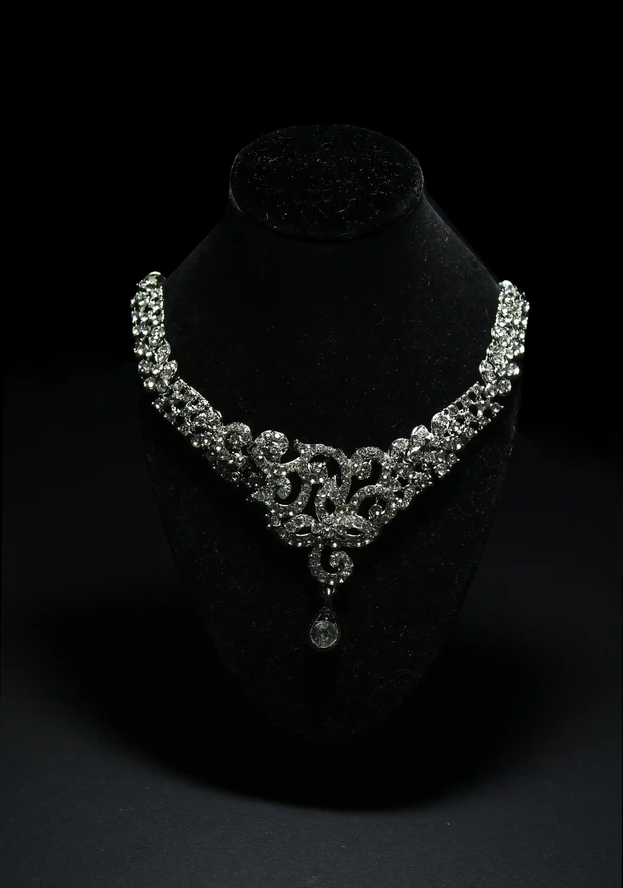
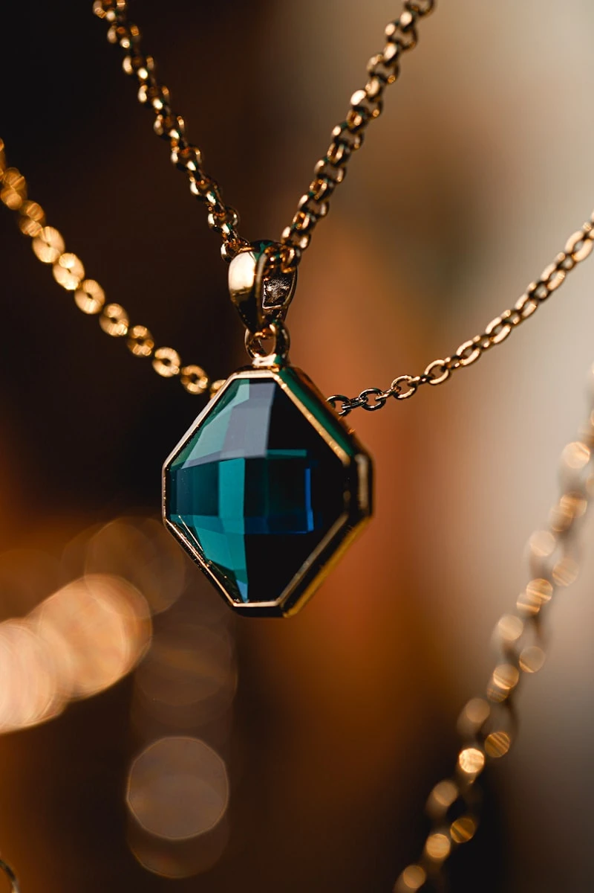

Stackly
Crafting the world's most exquisite heirlooms, seamlessly blending centuries of artistry with breathtaking modern elegance.
Every creation is a testament to our unwavering commitment to perfection and the timeless beauty of fine jewelry.
Explore Our Heritage
Our Genesis
Born in the vibrant heart of the city in 1995, Stackly began as a solitary dream in a small, candle-lit workshop. The vision was simple yet profoundly ambitious: to redefine luxury by stripping away the superfluous and celebrating the pure, unadulterated beauty of nature's finest elements.
Over the decades, that humble beginning has transformed into a globally recognized symbol of prestige, without ever losing the intimate, artisanal soul that defined our very first creation.
Artistry Without Compromise.
Since our founding, Stackly has stood as a beacon of unmatched quality and visionary design. Every piece we create begins with an emotion, sketched by master artisans, and forged in the rarest materials on earth.


A Curated Legacy
We do not just create jewellery. We curate legacies that transcend time. Each collection is a testament to the pursuit of absolute perfection.
Discover The ArtOur Guiding Philosophy
Unrivaled Purity
We source only the top 1% of diamonds globally. Each stone must pass our rigorous internal grading for cut, clarity, and fire, exceeding standard certification norms.
Master Craftsmanship
Our ateliers house generations of savoir-faire. True luxury cannot be mass-produced; it must be coaxed to life by the careful hands of master artisans.
Timeless Design
We ignore fleeting trends to focus on absolute proportion and enduring elegance. An Stackly piece is designed to be as breathtaking in a century as it is today.
The Master's Journey

01. The Dream
Every masterpiece begins as a fleeting thought. We draw inspiration from the natural world, capturing ephemeral beauty in our minds before committing it to design.

02. The Sketch
Translating emotion into form. Our master designers put pen to paper, meticulously outlining the proportions, angles, and curves that will define the piece.

03. The Craft
Forging precious metals and setting the rarest stones. Decades of traditional savoir-faire meet cutting-edge precision to assemble the perfect structure.
04. The Legacy
A masterpiece born to endure. The final creation is polished to absolute perfection, ready to be cherished, worn, and passed down for generations.
Ethical Brilliance
True luxury means operating with total respect for humanity and the earth. We are strictly committed to the Kimberley Process, ensuring 100% of our diamonds are conflict-free. Furthermore, we pioneer the use of recycled precious metals, significantly reducing our ecological footprint without compromising purity.
Every piece tells a story.
Let yours begin today.
Celebrate life's milestones with jewellery crafted to last generations. From conflict-free certified diamonds to hallmarked pure gold, we promise absolute perfection in every detail.